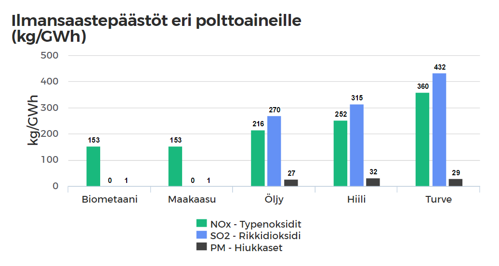

Miksi maakaasu?
Maakaasun tunnustetaan olevan puhtain energialähde kaikista fossiilisista polttoaineista. Esimerkiksi kivihiiltä poltettaessa syntyy hiilidioksidipäästöjä noin 40% enemmän kuin maakaasua poltettaessa. Suomessa käytettävä maakaasu on pääosin pelkkää metaania (CH4), jonka poltosta ei siksi vapaudu lähes ollenkaan esimerkiksi rikkipitoisia kaasuja, jotka sadeveden mukana tulevat maan pinnalle ja vesistöihin, joissa se aiheuttaa luonnolle haitallista happamoitumista. Suomen energiantuotanosta noin 8% tulee maakaasusta ja tästä suurin osa käytetään varsinkin Helsingin seudun asuntojen lämmityksestä. Tuomme Venäjältä maakaasun Suomeen, sillä Suomella ei ole omia maakaasuvaroja. Meillä on myös pitkäaikainen maakaasun tuontisopimus Venäjän kanssa.
Maakaaasu on läsnä jokaisen suomalaisen arjessa, ja se tekee meille monenlaista hyvää. Kaasu tulee luonnosta, ja sitä pystytään siirtämään pitkiäkin matkoja turvallisesti ja luontoa säästäen. Kaasua käytetään kaikkialla, niin teollisuudessa, liikenteessä kuin kotonakin.